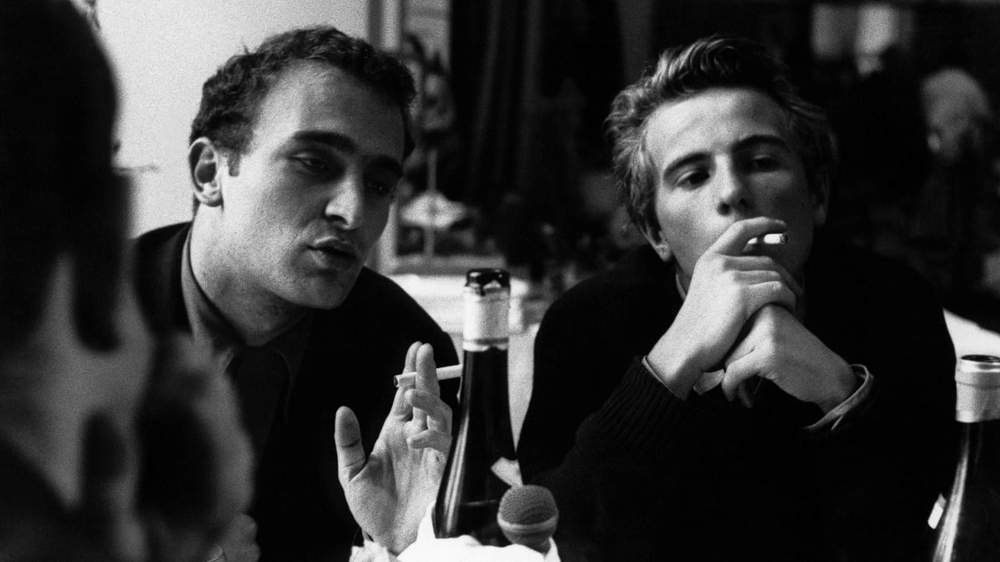

Sur cette page sont réunies des critiques de films que j'ai écrites entre 2017 et ...
Chronique d'un été (Jean Rouch et Edgar Morin, 1961)
15th of August, 2017
One very common mistake people make when faced with the term cinéma vérité (coined by this very movie) is to
focus on "vérité" (= truth) and completely forget about "cinéma". Thus leading to the false idea that this
film (and the others belonging to the movement) are meant to be truthful representation of Reality.
Morin rules out this idea completely when he defines the term: "There are two ways to conceive of the
cinema
of the Real: the first is to pretend that you can present reality to be seen; the second is to pose the
problem of reality. In the same way, there were two ways to conceive cinéma vérité. The first was to pretend
that you brought truth. The second was to pose the problem of truth."
That being said, this film is, in accordance with Morin definition, one of the sneakiest I've seen.
Rouch & Morin first ask some random people whether they are happy or not, and then they shift away from that
question and follow some people from various social classes going through their daily lives.
We see the working class man going to the factory he works at, Mary Lou (Marilu Parolini) working for
the Cahiers du Cinéma (Rivette, whom she'd just met, appears in several shots), Marceline (Loridan (not yet
"-Ivens")) speaking about her life in the concentration camp, etc.
Some scenes seem more 'raw' than others (the 'raw' Mary Lou scenes as opposed to the 'fake' Marceline
walking outside scene).
Then the two partners in mischief discuss the film and its reception and call it quits. The end.
That's the 'official' version of the film, the one most likely sees during a first watching of the
movie.
On second (and later) viewing, this narrative starts to erode: one notices more and more things that could
not
have been filmed the way they are presented.
The scene between Jacques (on one side) and Angelo and a worker (on the other side) is a clear cut
example of
that: if you pay close attention to the shelves behind Jacques, the titles of the book are in the wrong
direction, meaning that he's not looking right (at Angelo) but left (probably at Rouch or Morin). This is
made
even clearer when listening to the change of the sound texture from one shot to another.
Another example is the fact that, during the dinner scene and the talks about the Algerian war, people
switch
positions from one shot to the other (while their conversations goes on in seemingly real time).
Something else, too: there are weird sound variations that strangely (and for no apparent reason) coincide
with
(senseless) visual cuts.
The heartfelt talk between Marceline and Jean-Pierre is a great instance of this: the cuts right
before
Marceline says "près de pleurer après leurs expériences politiques" and when Jean-Pierre seemingly switches
from
talking about politics to talking about his love relationships ("et sur le plan amoureux"; if you cut that
sentence out, you can clearly see that Jean-Pierre is talking about politics all the way).
Not all of the things filmed seem to be altered by editing, and the shots in themselves may be "true" (as true as one can be when speaking, in front of a camera on top of that), but the real problem posed by this film is that one can never really know whether what's in front of him is true or not. Maybe the scenes I feel to be true are only moments when Rouch&Morin were more careful not to leave clues of the tricks they're playing on the audience.
What Rouch and Morin do here is very perverse: they take "real" stuff, edit it into something that didn't happen, and do so in such a way that their lies are believable and pass for the "truth".
Hence, cinéma vérité.